ファイルアップロード
FILE · 文書 · 画像を CRF に添付する入力欄
ファイルアップロードフィールドとは
- 1.1フィールドの追加と属性パネルの構成
1.1フィールドの追加と属性パネルの構成
概要
ファイルアップロード(FILE)は、検査結果票 · 同意書の写しのように文書や画像をそのまま添付する入力欄です。追加するとキャンバスに点線の領域が表示され、許可形式とサイズ制限が案内として表示されます。保存されるのはファイルそのものではなく添付したファイルの一覧であり、ファイルの実体は別の保管場所に保管されます。
画面説明
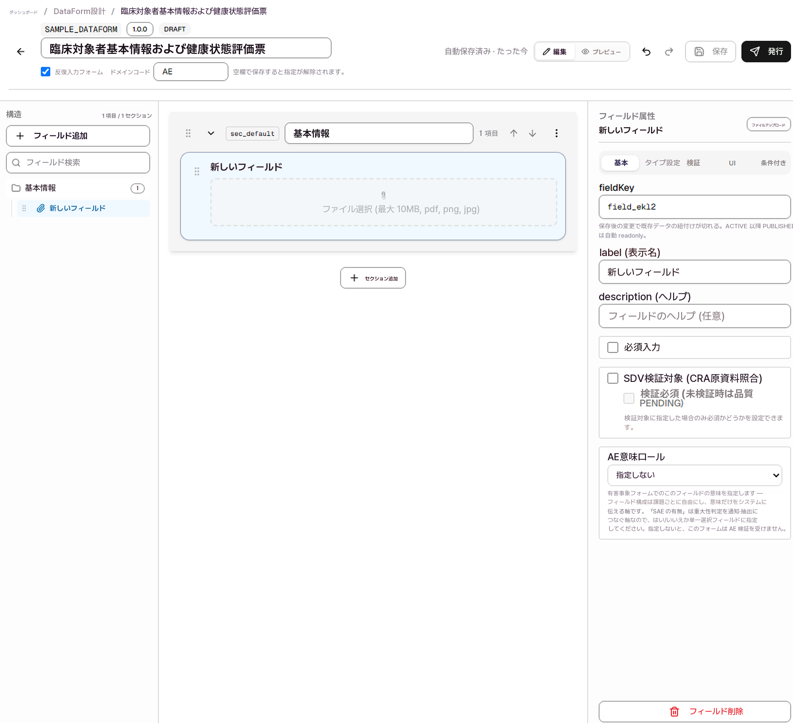
[+ フィールド追加] — ここでタイプを指定するとフィールドが作成されます。
構造ツリーに新しいフィールドが追加されます。アイコンはクリップの形です。
WYSIWYG キャンバスに点線の添付エリアが表示され、その中に「ファイル選択 (最大 10MB, pdf, png, jpg)」という案内が表示されます。設定していないのに制限が書かれています — 作成時にデフォルトの制約が入るためです。3.1
fieldKey — 値が保存される実際のキーです。2.1
label (表示名) · description (ヘルプ) — 画面に表示される名前と補足説明です。2.1
必須入力 · SDV検証対象 — 2.2 · 2.3 で扱います。
AE意味ロール — 有害事象フォームでフィールドの意味を指定する項目です。画面の案内が示すとおり、はい/いいえか単一選択フィールドが指定対象であるため、このタイプでは指定しません。
タイプバッジ「ファイルアップロード」 — 選択したフィールドのタイプです。追加した後は変更できません。
属性タブ 5種 — 基本 · タイプ設定 · 検証 · UI · 条件付き。このマニュアルの2~6章が各タブに対応します。
「未測定宣言を許可」の項目はありません。他のタイプでは AE意味ロールの下にありますが、このタイプはシステムが未測定宣言をサポートしていません。添付がない場合は、単に空の状態として記録されます。(※ 7.2)
注意事項
必須確認 データ破損 · フォーム完了不可
- • ⛔ ファイルの中に被験者の識別情報が含まれないようにしてください。検査結果票 · 読影レポートには、氏名 · 登録番号 · 生年月日が印刷されていることが多くあります。隠してから添付するよう、ヘルプ2.1と helpText5.4に必ず記載してください — システムはファイルの内容をチェックしません。
- • タイプは追加した後に変更できず、発行(PUBLISH)後は構造そのものを変更できません。誤って選択した場合は、フィールドを削除して再度追加してください。
誤解しやすい動作
- • 保存されるのは添付したファイルの一覧です。ファイルの実体は別の保管場所に置かれ、このフィールドにはどのファイルが添付されているかだけが記録されます。そのため、データ抽出結果にもファイルそのものではなく、その一覧が出力されます。
基本タブ — 名前 · 必須 · 検証対象
- 2.1fieldKey · 表示名 · ヘルプ
- 2.2必須入力
- 2.3SDV検証対象 (CRA原資料照合)
2.1fieldKey · 表示名 · ヘルプ
概要
フィールドの名前を決める領域です。保存キー(fieldKey)と画面に表示される名前(label)は別々の値であり、変更してよい時点が異なります。ファイルアップロードでは、何を添付すべきかを言葉で説明しないと記録者には分からないため、ヘルプが特に重要です。
画面説明
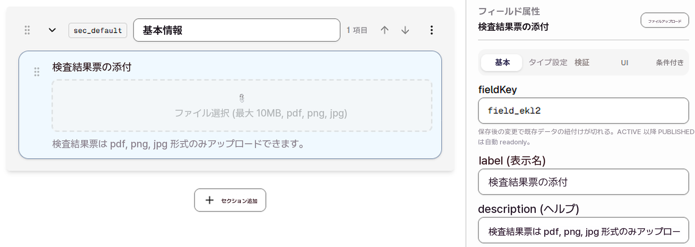
label (表示名) — 入力画面に表示する項目名を入力します。
キャンバスの添付エリアの上のタイトルとして表示されます。
description (ヘルプ) — 表示名の下に表示する補足説明を入力します。空欄にすると表示されません。
添付エリアの下に表示されます。キャプチャでは「検査結果票は pdf, png, jpg 形式のみアップロードできます。」です。
fieldKey — 値が保存される実際のキーです。フィールドを追加すると field_ekl2 のように自動で付与され、画面の案内のとおり「保存後の変更で既存データの紐付けが切れる」です。
注意事項
必須確認 データ破損 · フォーム完了不可
- • 何を添付すべきかをヘルプに記載してください。「検査結果票の添付」だけでは、どの検査の結果票なのか、原本なのか写しなのかが分かりません。添付対象を具体的に書いておくと、差し戻しが減ります。
- • 許可形式をヘルプにも書いておくとよいでしょう。キャプチャのように書いておけば、記録者が添付前に確認できます — ただし、形式を実際に制限するのはタイプ設定タブです。両方の内容が食い違わないようにしてください。3.2
- • fieldKey は保存した後に変更しないでください。すでに添付されたファイルとの紐付けが切れ、このフィールドを参照していた検証規則4.3と条件付き表示6章も一緒に壊れます。
誤解しやすい動作
- • 表示名(label)はいつでも変更できます。保存された値には影響しません。
2.2必須入力
概要
このフィールドに必ず添付しないとフォームを完了できないようにするかどうかを決めます。必須に指定すると、ファイルが一つもない状態が未入力として集計されます。現場で原本をすぐに入手できない場合があるため、指定する前に添付が遅れるときの対応もあわせて決めておいてください。
画面説明
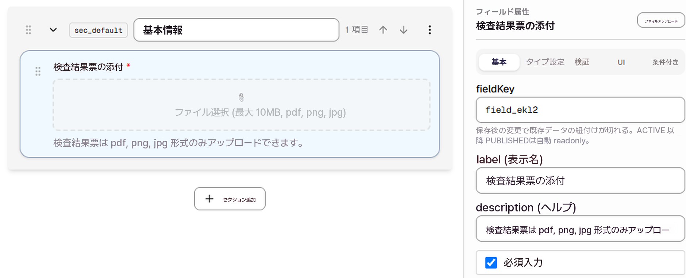
* が表示される必須入力 — 選択すると、このフィールドが必須項目になります。
キャンバスの表示名の右に赤い * が表示されます。
label · description — 2.1 で入力した値がそのまま表示されます。
注意事項
必須確認 データ破損 · フォーム完了不可
- • ⛔ このタイプには「未測定」を宣言する方法がありません。他のタイプでは確認不可を値として残せますが、ファイルアップロードではその機能がサポートされていません。原本を最後まで入手できない場合が予想されるなら、必須に指定せず、理由を記入する別のテキストフィールドを一緒に設けてください。(※ 7.2)
- • 非表示のフィールドは必須チェックから除外されます。条件付き表示6章で隠されている間は、必須であっても添付なしでフォームが完了します。
誤解しやすい動作
- • 「ファイルが一つでもあれば」充足です。何件添付すべきかは必須設定では決められません — 必要な枚数はヘルプに記載してください。2.1 · 3.3
- • 誤ってアップロードしたファイルは削除できます。ただし、削除の履歴も記録に残ります。
2.3SDV検証対象 (CRA原資料照合)
概要
SDV(Source Data Verification) は、臨床開発モニター(CRA)が入力値を医療機関の原資料と照合する手順です。このフィールドをその対象に指定するかどうかを、ここで決めます。この設定はすべてのフィールドタイプで共通なので、画面もタイプに関係なく同じです。
画面説明


SDV検証対象 (CRA原資料照合) — 選択すると、このフィールドが CRA の照合リストに含まれます。
選択状態に変わると、下位項目が有効になります。
検証必須 (未検証時は品質 PENDING) — ①を選択した後でなければ指定できません。選択すると、CRA が照合を終えるまで、そのデータの品質ステータスが PENDING のままになります。
①を選択する前は、②が薄く表示されて無効です。画面の案内のとおり「検証対象に指定した場合のみ必須かどうかを設定できます。」
注意事項
必須確認 データ破損 · フォーム完了不可
- • ファイルを差し替えたり追加したりすると、検証が解除されます。品質ステータスが PENDING に戻り、CRA が再度照合する必要があります。
誤解しやすい動作
- • 添付ファイルそのものが原資料である場合が多くあります。検査結果票をそのままアップロードしたなら、CRA が照合する対象がすでに画面にあることになるため、何と何を照合するかをヘルプに明確に記載してください。2.1
- • SDV は入力した本人が実施することはできません。システムがクロス検証(Cross-User SoD)を強制するため、入力者と検証者は必ず別の人である必要があります。
参考
- • 品質ステータスは PENDING → VERIFIED → CLEAN の順に進みます。検証必須に指定したフィールドが一つでも未検証であれば、そのデータは CLEAN になりません。
タイプ設定タブ — 許可形式 · サイズ · 個数
- 3.1タイプ設定タブの全体構成
- 3.2allowedTypes · maxSizeMB
- 3.3複数アップロード (multiple)
3.1全体構成
概要
ファイルアップロードのタイプ設定は三つの欄です — どの形式を3.2 · どのくらいの大きさのファイルまで3.2 · 何件まで3.3 受け付けるかを決めます。他のタイプと異なり、最初から二つの欄に値が入っています — フィールドを作成するときにデフォルトの制約が一緒に指定されるためです。
画面説明
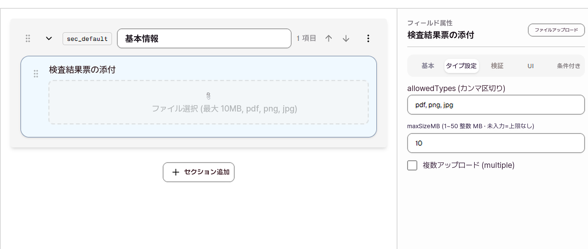
allowedTypes (カンマ区切り) — 許可するファイル拡張子です。最初は pdf, png, jpg が入っています。3.2
maxSizeMB — ファイル 1 件の最大サイズです。最初は 10 が入っています。画面の案内のとおり「(1~50 整数 MB · 未入力=上限なし)」です。3.2
①~②がキャンバスの添付エリアの案内にそのまま反映され、「ファイル選択 (最大 10MB, pdf, png, jpg)」と表示されます。
複数アップロード (multiple) — 複数のファイルを添付できるようにするかどうかを決めます。最初はオフになっており、1 件だけ添付できます。3.3
タイプバッジ「ファイルアップロード」 — 設定中のフィールドのタイプです。
属性タブ — 現在はタイプ設定タブです。
注意事項
必須確認 データ破損 · フォーム完了不可
- • 二つの欄の値は案内文ではなく、実際に適用された制約です。他のタイプでは薄い文字は例にすぎませんが、このタイプではフィールドを作成した時点で指定された値です — そのままにすると pdf · png · jpg 10MB で運用されます。課題に合っているか必ず確認してください。
- • 二つの欄を空にすると制限がなくなります。allowedTypes を空にするとすべての形式が、maxSizeMB を空にするとサイズの上限がなくなります(サーバーが許可する限度まで)。制限をなくすことが意図でなければ、空にしないでください。3.2
誤解しやすい動作
- • デフォルト値(defaultValue)の項目はありません。ファイルはあらかじめ埋めておくことができないため、このタイプにはその設定が存在しません。
参考
- • 自動計算の項目もありません。計算式でファイルを作り出すことはできないためです。
3.2allowedTypes · maxSizeMB
概要
どの形式をどのくらいの大きさまで受け付けるかを決めます。二つの欄はどちらも記録者がファイルを選んだ時点でチェックされるため、合わないファイルは添付自体が拒否されます。制限を絞っておくと、誤ったファイルがアップロードされることを事前に防げます。
画面説明
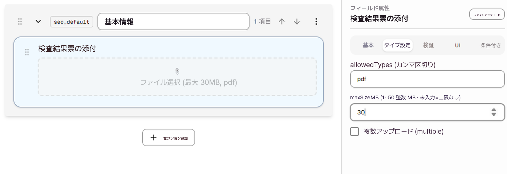
pdf · 30 に変えると、添付エリアの案内がすぐに追従して変わるallowedTypes (カンマ区切り) — 許可する拡張子をカンマで区切って入力します。キャプチャでは pdf 一つだけを残しています。ドット(.)を付けずに拡張子だけを書きます。
maxSizeMB — ファイル 1 件の最大サイズ(MB)です。キャプチャでは 30 です。1~50 の整数のみ指定でき、範囲外の値は自動で補正されます。
①~②の結果 — 添付エリアの案内が「ファイル選択 (最大 30MB, pdf)」に変わります。
複数アップロード (multiple) — 3.3 で扱います。
注意事項
必須確認 データ破損 · フォーム完了不可
- • ⛔ 発行した後に制限を絞っても、すでにアップロードされたファイルはそのまま残ります。新しい添付がブロックされるだけで、既存のファイルが削除されたり警告が表示されたりすることはありません — 運用中に絞る前に、すでに添付されたファイルを先に確認してください。
- • ⛔ サイズの上限は 50MB を超えることができません。それより大きい値を入力しても 50 に補正され、これはシステム全体の上限です。大きな動画資料はこのフィールドではなく、別の送付手順を使用してください。
誤解しやすい動作
- • 拡張子だけでは内容を保証できません。名前を
.pdfに変えた別のファイルも通過する可能性があります — 内容の確認は SDV の段階で人が行います。2.3
参考
- • 拡張子はカンマで区切り、ドットは付けません。
pdf, jpgのように書きます。
3.3複数アップロード (multiple)
概要
ファイルを1 件だけ受け付けるか、複数受け付けるかを決めます。オフにすると1 件だけ添付でき、新しいファイルが既存のファイルを差し替えます。オンにすると複数を積み重ねることができます — 複数ページに分かれた結果票や複数の角度から撮った写真のように、まとめて受け取る必要がある資料に使用します。
画面説明
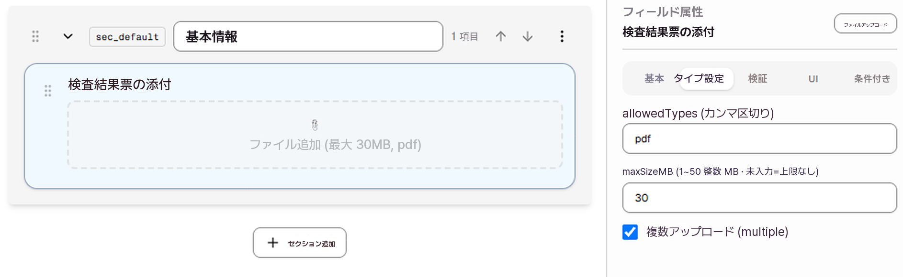
複数アップロード (multiple) — 選択すると、ファイルを複数添付できます。
添付エリアの案内が「ファイル追加 (最大 30MB, pdf)」に変わります。オフのときの「ファイル選択」とこの一語だけが異なります。
allowedTypes · maxSizeMB — 3.2 で設定した値です。サイズ制限はファイル 1 件ごとに適用され、個数とは関係ありません。
注意事項
必須確認 データ破損 · フォーム完了不可
- • ⛔ オフにすると、新しいファイルが既存のファイルを差し替えます。記録者が追加するつもりで再度添付すると、先にアップロードしたファイルが置き換えられます — 複数枚を受け取る必要があるなら、必ずオンにしておいてください。
- • ⛔ 最大件数は指定できません。オンにすると制限なく積み重なるため、必要な枚数はヘルプと helpText に記載して案内してください。2.1 · 5.4
- • オンにしていたものをオフにするのは慎重に行ってください。すでに複数のファイルが添付されたフィールドで複数をオフにすると、以降の添付が差し替え方式に変わり、混乱が生じます。
誤解しやすい動作
- • サイズ制限はファイル 1 件単位です。30MB にして複数をオンにすると、30MB のファイルが複数アップロードされる可能性があります。3.2
検証タブ — 保存前の値チェック
- 4.1検証規則がない状態
- 4.2規則の追加
- 4.3規則作成完了 — 他フィールドと比較
4.1検証規則がない状態
概要
保存する前に値が条件に合っているかをチェックする規則をまとめるタブです。ファイルアップロードでは形式とサイズをタイプ設定タブですでに防いでいるため、このタブで別途チェックすることはほとんどありません — 他のフィールドとの関係をチェックするときにだけ使用します。4.3
画面説明
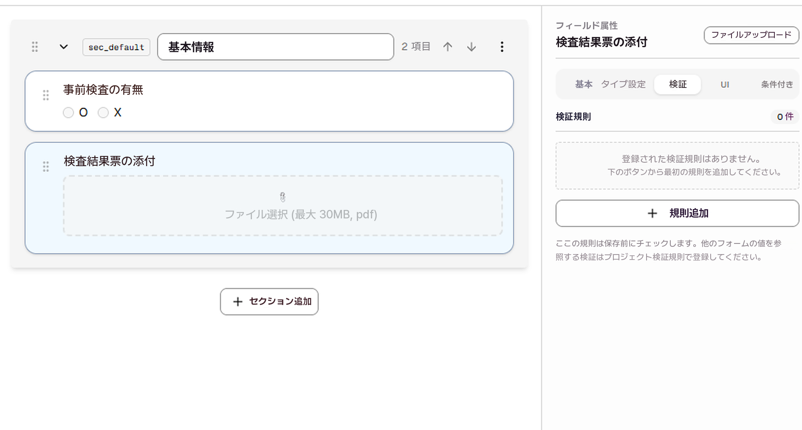
[+ 規則追加] — 最初の規則を作成します。選択した後の画面は 4.2 で説明します。
検証規則領域と、登録された規則数です。最初は 0 件 です。
規則がない場合は、「登録された検証規則はありません。下のボタンから最初の規則を追加してください。」という案内が表示されます。
下部の案内 — 「ここの規則は保存前にチェックします。他のフォームの値を参照する検証はプロジェクト検証規則で登録してください。」
注意事項
必須確認 データ破損 · フォーム完了不可
- • ⛔ 他のフォームの値を参照する検証はここでは作成できません。そのような規則は「プロジェクト検証規則」画面で登録してください。
- • 検証タブはタイプによって制限されません。ファイルに合わない規則も選べるため、選んだ規則がこのタイプで成り立つかを自分で確認する必要があります。4.2
誤解しやすい動作
- • 形式 · サイズの制限はここではなく、タイプ設定タブです。すでにそこで添付自体を防いでいるため、同じ内容を規則として重複して作成する必要はありません。3.2
- • キャプチャにはフィールドが二つあります。「事前検査の有無」(単一選択) と「検査結果票の添付」 — 前のフィールドの回答によって添付の可否が分かれる関係なので、4.3 で二つのフィールドを結び付ける規則を作成します。
4.2規則の追加
概要
4.1 の [+ 規則追加] を選択すると、規則 1 ブロックが作成されます。最初は「値の範囲」が設定されていますが、ファイルには大小がないため成り立ちません — 「他フィールドと比較」に変える必要があります。4.3
画面説明
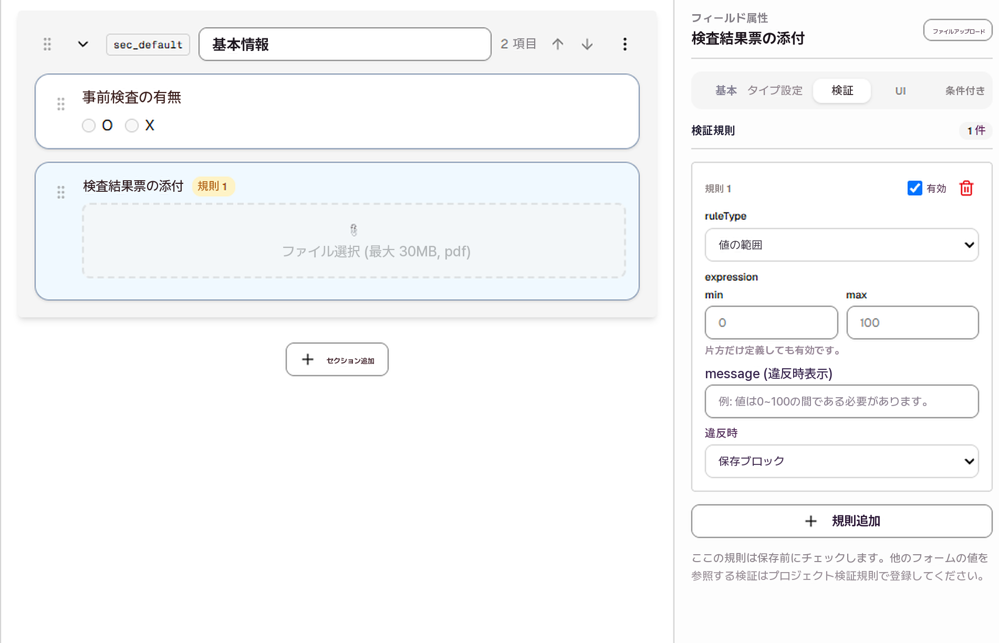
[+ 規則追加] — 規則をもう一つ作成します。(4.1 で選択したのと同じボタンです。)
キャンバスの表示名の横に「規則 1」バッジが表示されます。
規則数が 1 件 に変わります。
有効チェックボックスと削除アイコン — 規則を削除せずに一時的に停止できます。
ruleType — 規則の種類です。作成直後は「値の範囲」なので、「他フィールドと比較」に変更してください。
min — 値の範囲を選んだときに表示される下限の欄です。
max — 同じ条件で表示される上限の欄です。
message (違反時表示) — 規則に違反したときに、ユーザーに表示する文言です。
違反時 — 保存ブロックまたは警告から選択します。(ruleType によっては選べなくなることもあります — 4.3)
薄い文字の 0 · 100 と「片方だけ定義しても有効です。」は値の範囲に関する案内であり、設定された値ではありません。
注意事項
必須確認 データ破損 · フォーム完了不可
- • ⛔「値の範囲」をファイルの件数やサイズと誤解しないでください。この規則は数値をチェックするものなので、ファイルアップロードでは何も防げません。サイズ制限は maxSizeMB3.2、件数は複数アップロード3.3 が担当します。
- • ⛔「形式 (正規表現)」も使用しないでください。許可する拡張子は allowedTypes が担当します。正規表現を設定すると、正しく添付したファイルが拒否される可能性があります。3.2
- • message を空欄にすると、ユーザーはブロックされた理由が分かりません。必ず入力してください。
誤解しやすい動作
- • このタイプで役に立つのは「他フィールドと比較」です。「前の質問で特定の回答をしたときだけ添付できる」といった関係をチェックします。4.3
4.3規則作成完了 — 他フィールドと比較
概要
ruleType を他フィールドと比較に変えると、同じフォームの他のフィールドの値と比べてチェックします。ファイルアップロードで実際に使える唯一の規則の種類であり、前の質問の回答によって添付の可否が分かれる関係を表現できます。
画面説明
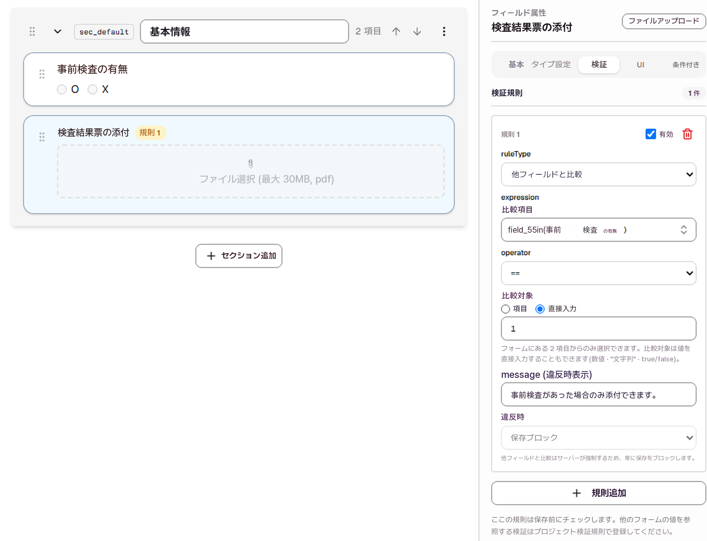
1 のときだけ保存されるように設定した状態ruleType = 他フィールドと比較 — 選択すると、下の欄が比較用に変わります。
比較項目 — 同じフォームの他のフィールドを選択します。キャプチャでは field_55in(事前検査の有無) で、単一選択フィールドです。
operator — 比較方法です。キャプチャでは ==(等しい) です。
比較対象 — 項目と直接入力から選択します。キャプチャでは直接入力で 1 を入れています — 「事前検査の有無」の保存値です。
message (違反時表示) — キャプチャでは 事前検査があった場合のみ添付できます。 です。
違反時 — グレーで無効です。画面の案内のとおり「他フィールドと比較はサーバーが強制するため、常に保存をブロックします。」 — この規則では警告を選べず、保存ブロックに固定されます。
画面の案内 — 「フォームにある 2 項目からのみ選択できます。比較対象は値を直接入力することもできます(数値 · "文字列" · true/false)。」
注意事項
必須確認 データ破損 · フォーム完了不可
- • ⛔ 比較対象には、画面に表示される文言ではなく保存値を入れます。キャプチャの「事前検査の有無」は画面に
O·Xと表示されますが、保存値は1です。参照するフィールドの選択肢一覧で、保存値を先に確認してください。 - • ⛔ 条件の向きを発行前に確認してください。検証規則は満たすべき条件として記述します。設定した後、プレビューで実際の動作を確認してください。
誤解しやすい動作
- • この規則は警告にできません。違反時が保存ブロックに固定されるため、必ず防ぐ必要がある関係にだけ使用してください。
- • 添付が一つもない場合、規則はチェックされません。空の状態はチェック対象ではなく、未添付を防ぐのは必須入力2.2の役割です。
UIタブ — 画面配置と案内文
- 5.1UIタブの全体構成
- 5.2レイアウト幅
- 5.3読み取り専用 · 非表示
- 5.4helpText (ヘルプ)
5.1全体構成
概要
値そのものではなく、画面にどう配置し、どう案内するかを決めるタブです。このタブの設定は保存されるデータ自体を変更しません。ただし、非表示は画面上で隠すだけで添付されたファイルはそのまま残るため、使用する前に 5.3 を確認してください。
画面説明
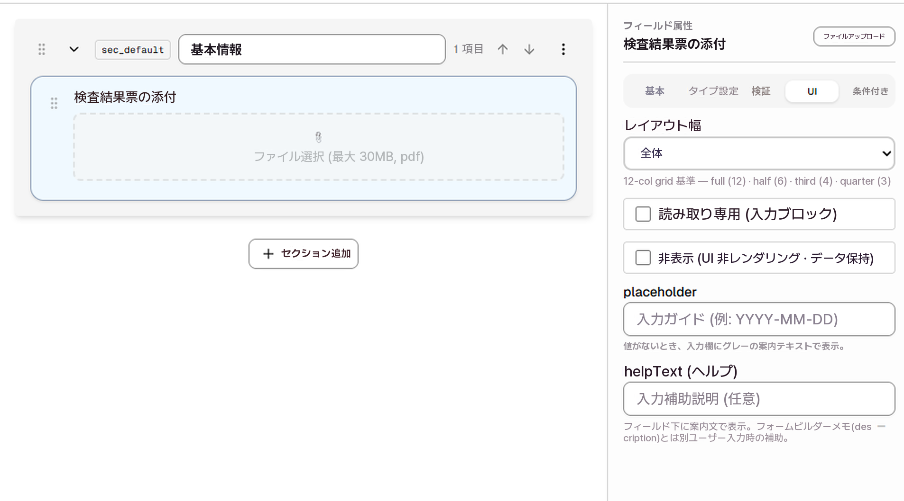
レイアウト幅 — フォームの1行の中でこのフィールドが占める幅です。5.2
読み取り専用 (入力ブロック) — 表示はしますが、添付 · 削除を防ぎます。5.3
非表示 (UI 非レンダリング · データ保持) — 画面から隠します。5.3
helpText (ヘルプ) — 添付エリアの下に表示する案内文です。5.4
placeholder — 項目は表示されますが、このタイプでは適用されません。添付エリアの案内文はタイプ設定タブの値からシステムが直接組み立てるため (「ファイル選択 (最大 10MB, pdf, png, jpg)」)、ここでは変更できません。3.1 · 5.4
タイプバッジ「ファイルアップロード」
注意事項
必須確認 データ破損 · フォーム完了不可
- • placeholder に入力しても画面には表示されません。エラーも警告も表示されないため、書いておいた案内が知らないうちに消えます — 案内は helpText に記載してください。5.4
誤解しやすい動作
- • 添付エリアの案内文を変えたい場合は、タイプ設定タブを修正してください。許可形式とサイズを変えると、その文言が追従して変わります。3.2
- • このタブの設定は、保存されたファイルを変更しません。配置と案内だけが変わります。
参考
- • 読み取り専用と非表示を一緒に使用しないでください。非表示が優先して適用され、読み取り専用の設定は効果がありません。5.3
5.2レイアウト幅
概要
フォームの1行の中でこのフィールドが占める幅を決めます。ファイルアップロードは添付エリアが丸ごと縮むタイプなので、幅を狭くすると案内文が切れたり、添付したファイル名がすべて表示されなかったりすることがあります。
画面説明
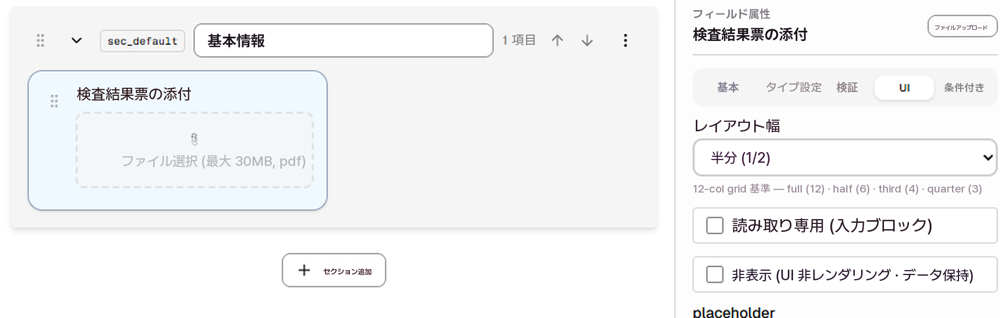
レイアウト幅 — 全体 · 半分 (1/2) · 1/3 · 1/4 から選択します。
キャンバスの添付エリアが一緒に狭くなります。同じ行の残りの場所に他のフィールドが配置されます。
12-col grid 基準 — 画面の案内のとおり「full (12) · half (6) · third (4) · quarter (3)」です。
注意事項
必須確認 データ破損 · フォーム完了不可
- • ⛔ 1/3 · 1/4 に狭めないでください。添付エリアの案内文が長いため (「ファイル選択 (最大 30MB, pdf)」)、切れて読めなくなります。狭める必要がある場合は、半分までにしてください。
- • 複数アップロードをオンにしたフィールドは幅を狭めないでください。添付したファイルが一覧として積み重なりますが、幅が狭いとファイル名が切れて、何をアップロードしたのか確認できません。3.3
誤解しやすい動作
- • 全体幅を推奨します。添付エリアはもともと多くのスペースを使う要素です。
参考
- • 指定しない場合は全体の幅が適用されます。
5.3読み取り専用 · 非表示
概要
フィールドを表示するが変更できないようにしたり、画面から隠すが添付されたファイルは保持したりする設定です。どちらも、すでにアップロードされたファイルを削除しません。
画面説明
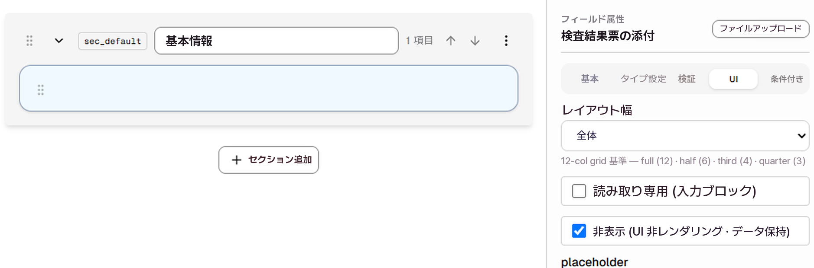
読み取り専用 (入力ブロック) — 選択すると、添付されたファイルを見ることはできますが、新たにアップロードしたり削除したりすることはできません。
非表示 (UI 非レンダリング · データ保持) — 選択すると、入力画面にこのフィールドが表示されません。
キャンバスのカードに空の枠だけが残ります。表示名も添付エリアも表示されません。
レイアウト幅 — 5.2 で設定した値です。
注意事項
必須確認 データ破損 · フォーム完了不可
- • ⛔ 非表示は添付されたファイルを削除しません。すでにアップロードされたファイルは保管場所にそのまま残り、抽出と監査証跡に含まれます。誤ってアップロードしたファイルを隠すために非表示を使うと、ファイルはそのまま残ったまま画面からだけ消えます — 削除は入力画面で行ってください。
- • ⛔ 個人情報を含むファイルを非表示で処理しないでください。識別情報が印刷された結果票を誤ってアップロードした場合は、隠すのではなくファイルを削除する必要があります。1.1
誤解しやすい動作
- • 読み取り専用は、提出が完了した資料に使用してください。これ以上変わってはならない添付を固定するときに適しています。
- • 条件によって隠す場合は、条件付き表示を使用してください。このタブの非表示は常に隠す設定です。6章
5.4helpText (ヘルプ)
概要
記録者に何をどのように添付すべきかを知らせる文言を書く場所です。ファイルアップロードは形式 · サイズ · 個数の制限が別々のタブに分散しているため、記録者の立場で一度に分かる場所はこの文言だけです。同じタブのplaceholder はこのタイプでは適用されません。
画面説明
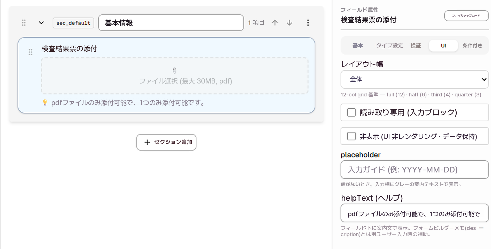
helpText (ヘルプ) — 添付エリアの下に表示する案内文を入力します。
添付エリアの下に 💡 アイコンと一緒に表示されます。キャプチャでは「pdfファイルのみ添付可能で、1つのみ添付可能です。」です。
placeholder — このタイプでは適用されません。入力しても画面には表示されず、エラーも表示されません。5.1
タイプバッジ「ファイルアップロード」
注意事項
必須確認 データ破損 · フォーム完了不可
- • ⛔ placeholder に案内を書かないでください。このタイプでは画面に表示されないため、書いておいた内容が知らないうちに消えます。
- • ⛔ 識別情報を隠して添付するよう、必ず記載してください。氏名 · 登録番号が印刷された資料がそのままアップロードされるのを防ぐ唯一の手段がこの案内です。1.1
- • 制限を人の言葉で改めて書いておいてください。キャプチャのように形式 · 個数を一緒に書いておけば、記録者が添付前に確認できます。制限を変えたら、この文言も一緒に修正する必要があります。3.2 · 3.3
誤解しやすい動作
- • description と helpText は別の項目です。画面の案内のとおり、helpText は「フォームビルダーメモ(description)とは別 — ユーザー入力時の補助」です。2.1
条件付きタブ — 他の値に応じて表示する
- 6.1条件付き表示の有効化
- 6.2条件の設定
6.1条件付き表示の有効化
概要
他のフィールドの値に応じてこのフィールドを表示したり隠したりする機能です。ファイルアップロードと特に相性のよい機能です — 該当しない被験者には添付エリアを最初から表示しないようにすれば、不要な資料がアップロードされるのを防げます。
画面説明
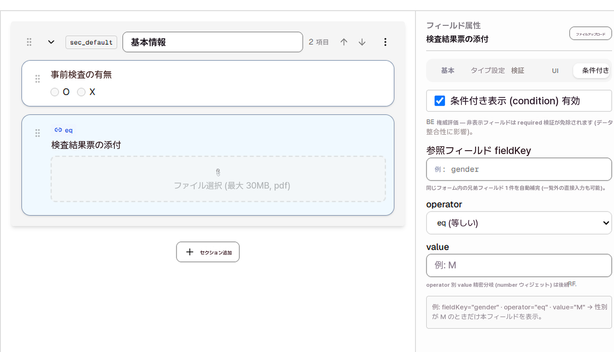
条件付き表示 (condition) 有効 — 選択すると、下の条件設定が表示されます。
キャンバスのフィールドの上に 🔗 eq バッジが表示され、条件が適用されたことを知らせます。
参照フィールド fieldKey — 条件の基準となる、同じフォーム内の他のフィールドです。同じフォームの兄弟フィールドが自動補完され、一覧にない値を直接入力することもできます。
operator — 比較方法です。デフォルト値はeq (等しい)です。
value — 比較する値です。参照フィールドの保存値を入力します。6.2
⚠ 画面の案内 — 「非表示フィールドは required 検証が免除されます (データ整合性に影響)。」 条件の判定はシステムが実行します。
下部の例 — fieldKey="gender" · operator="eq" · value="M" → 性別が M のときだけ本フィールドを表示。
注意事項
必須確認 データ破損 · フォーム完了不可
- • ⛔ 条件を設定すると、必須検証が免除されます。条件が合わずに非表示になっている間は、そのフィールドが必須でも、添付なしでフォームが完了します。そのため、条件が誤っているとエラーなしで資料が欠落します。
- • ⛔ すでに添付した後で条件が偽になると、添付エリアが画面から消えます。ファイル自体は保管場所に残りますが、記録者は見ることも削除することもできなくなります — 基準となるフィールドを後で変更するときは特に注意してください。
誤解しやすい動作
- • 検証規則4.3より先に条件付き表示を検討してください。該当しない人に最初から尋ねなければ、誤って添付することもありません。
参考
- • 条件を有効にして参照フィールドを空欄にすると、条件は成立しません。必ず②~④をすべて入力してください。6.2
6.2条件の設定
概要
6.1 で有効にした条件を最後まで入力した状態です。この設定では、「事前検査の有無」フィールドの値が 1 のときだけ添付エリアが入力画面に表示されます。参照フィールドが単一選択なので保存値は文字列であり、value 欄にその値をそのまま書くことで条件が正常に動作します。
画面説明
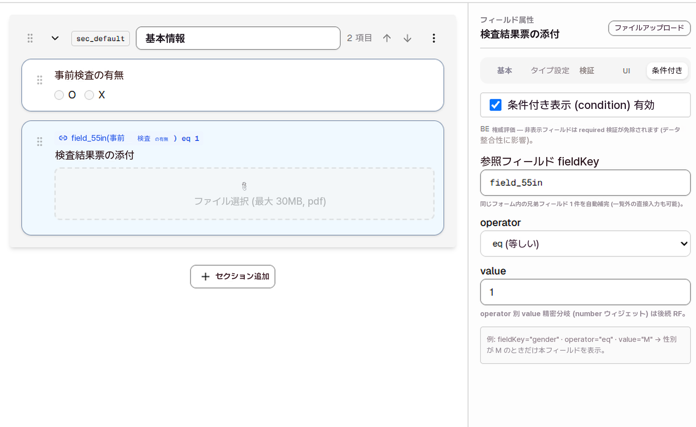
事前検査の有無 が 1 のときだけ表示されるように設定した状態参照フィールド fieldKey = field_55in — 同じフォームの「事前検査の有無」フィールドを指します。
①~③をすべて入力した結果 — キャンバスのバッジが 🔗 field_55in(事前検査の有無) eq 1 と具体化されます。
operator = eq (等しい)
value = 1 — 画面に表示される O ではなく、その選択肢の保存値を入力します。
⚠ 画面の案内 — 「非表示フィールドは required 検証が免除されます (データ整合性に影響)。」
下部の例 — fieldKey="gender" · operator="eq" · value="M" → 性別が M のときだけ本フィールドを表示。
注意事項
必須確認 データ破損 · フォーム完了不可
- • ⛔ value には画面の文言ではなく保存値を入力します。
Oと書くと条件が成立せず、添付エリアがいつまでも表示されません。参照するフィールドの選択肢一覧で、保存値を先に確認してください。 - • ⛔ 参照フィールドの保存値を変えると、条件が知らないうちに壊れます。たとえば保存値を
1からYに変えると、この条件はエラーなしでただ成立しなくなります — そのため、発行後の保存値の変更は危険です。 - • 参照フィールドの fieldKey を変更または削除しても条件が壊れます。条件は表示名ではなく fieldKey で結び付けられます。2.1
誤解しやすい動作
- • 設定した後、プレビューで確認してください。基準の値を変えながら、添付エリアが実際に表示されたり消えたりするかを確認する必要があります。
付録
- 7.1タブ別の設定項目一覧
- 7.2必ず覚えておくこと · 扱っていないもの
7.1タブ別の設定項目一覧
タブ別の設定項目
| タブ | 項目 | 何を決めるか | 本文 |
|---|---|---|---|
| 基本 | fieldKey | 値が保存される実際のキー (保存後の変更禁止) | 2.1 |
| label (表示名) | 画面に表示される項目名 | 2.1 | |
| description (ヘルプ) | 添付エリアの下の補足説明 — 何を添付するか | 2.1 | |
| 必須入力 | ファイルが一つでも必要かどうか (未測定宣言はない) | 2.2 | |
| SDV検証対象 | CRA原資料照合の対象か · 検証必須かどうか | 2.3 | |
| AE意味ロール | このタイプは指定対象ではない — はい/いいえ · 単一選択用 | 1.1 | |
| タイプ設定 | allowedTypes | 許可する拡張子 (カンマ区切り · 作成時 pdf, png, jpg) | 3.1 · 3.2 |
| maxSizeMB | ファイル 1 件の最大サイズ (1~50 整数 · 作成時 10) | 3.1 · 3.2 | |
| 複数アップロード (multiple) | 複数の添付を許可 — オフにすると新しいファイルが既存のファイルを差し替え | 3.3 | |
| 検証 | ruleType | 規則の種類 — このタイプで使えるのは他フィールドと比較のみ | 4.2 · 4.3 |
| 比較項目 · operator · 比較対象 | 同じフォームの他のフィールドと比べる条件 (保存値で比較) | 4.3 | |
| message | 違反時にユーザーに表示する文言 | 4.3 | |
| 違反時 · 有効 | 他フィールドと比較は保存ブロックに固定 · 規則の有効 · 無効 | 4.3 | |
| UI | レイアウト幅 | 12-col grid 上の幅 (半分まで · 複数なら全体) | 5.2 |
| 読み取り専用 | 添付されたファイルを表示するが、アップロードや削除はできないようにする | 5.3 | |
| 非表示 | 画面に表示しない (添付ファイルは保管場所にそのまま残る) | 5.3 | |
| helpText | 添付方法の案内 (placeholder はこのタイプでは適用なし) | 5.4 | |
| 条件付き | 条件の有効化 | 条件付き表示を使用するかどうか (必須検証の免除) | 6.1 |
| 参照フィールド fieldKey | 条件の基準となる、同じフォームのフィールド | 6.2 | |
| operator · value | 比較方法と比較する値 (保存値を入力) | 6.2 |
他のタイプとの違い
| 項目 | 他のタイプ | ファイルアップロード |
|---|---|---|
| タイプ設定の初期状態 | 空欄から開始 | デフォルトの制約が値として入っている 3.1 |
| 未測定宣言を許可 | 基本タブに項目あり | 項目自体がない 2.2 · 7.2 |
| デフォルト値 (defaultValue) | タイプ設定タブにあり | ない — ファイルはあらかじめ埋められない 3.1 |
| placeholder | 入力欄の案内として表示 | 適用されない — 案内はシステムが組み立てる 5.4 |
7.2必ず覚えておくこと · 扱っていないもの
必ず覚えておくこと
必須確認 データ破損 · フォーム完了不可
- • ファイル内の被験者の識別情報を隠して添付させてください。システムはファイルの内容をチェックしません — 防ぐことができる唯一の手段は、ヘルプと helpText の案内です。1.1 · 2.1 · 5.4
- • 作成直後の
pdf, png, jpg·10MBは、すでに適用された制約です。例ではないため、課題に合っているか必ず確認してください。3.1 - • 複数アップロードをオフにすると、新しいファイルが既存のファイルを差し替えます。複数枚を受け取る必要があるなら、必ずオンにしておいてください。3.3
- • 発行後に制限を絞っても、すでにアップロードされたファイルは残ります。新しい添付がブロックされるだけで、警告も表示されません。3.2
- • 非表示は添付されたファイルを削除しません。誤ってアップロードしたファイルは、隠すのではなく入力画面で削除する必要があります。5.3
- • このタイプには「未測定」を宣言する方法がありません。原本を最後まで入手できない可能性があるなら、必須に指定せず、理由を記入するテキストフィールドを一緒に設けてください。2.2
誤解しやすい動作
- • 保存されるのは添付したファイルの一覧です。ファイルの実体は別の保管場所に整合性チェックとともに保管されます。1.1
- • 形式 · サイズは検証タブではなく、タイプ設定タブが担当します。「値の範囲」はファイルの件数もサイズもチェックしません。3.2 · 4.2
- • サイズの上限はファイル 1 件単位であり、50MB を超えることはできません。3.2
参考
- • 同じ関係であれば、検証規則より条件付き表示が先です — 尋ねなければ、誤って添付することもありません。4.3 · 6.1
この文書で扱っていないもの
※ 未測定宣言を許可 — 基本タブに項目が表示されません。システムがこのタイプの未測定宣言をサポートしていないためであり、キャプチャが抜けているわけではありません。添付がない場合は単に空の状態として記録されます。2.2
placeholder — UIタブに項目は表示されますが、このタイプでは適用されません。添付エリアの案内文は、タイプ設定タブの値からシステムが組み立てます。案内は helpText に記載してください。5.1 · 5.4
デフォルト値 (defaultValue) · 自動計算 (calculation) — タイプ設定タブに項目がありません。ファイルはあらかじめ埋めておいたり、計算式で作り出したりすることはできません。3.1
AE意味ロール — 基本タブに項目はありますが、このタイプは指定対象ではありません。はい/いいえか単一選択フィールドに指定してください。1.1
ファイルをアップロード · 削除する画面 — この文書はフォームを作成する側だけを扱います。記録者が実際に添付 · 削除 · ダウンロードする手順は、入力画面のマニュアルを参照してください。
最大添付件数の制限 — 指定できる項目はありません。必要な枚数はヘルプと helpText で案内してください。3.3